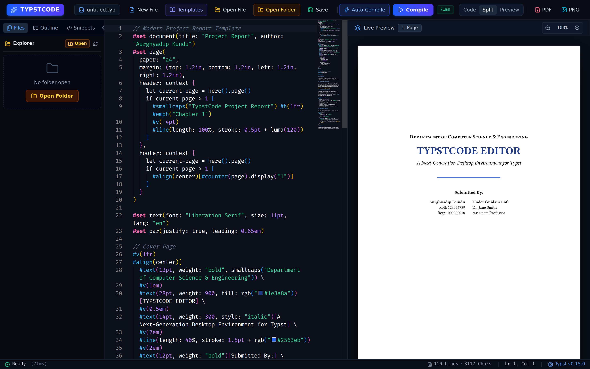

Engineered with Electron, React, Vite, and Monaco Editor. Write papers, reports, and resumes with instant SVG live rendering and real-time error diagnostics.

Crafted to combine the raw speed of native Typst with the rich editing features of VS Code.
Full syntax highlighting, line numbers, minimap, auto-closing brackets, and snippet code completion tailored for Typst markup.
Instant SVG vector rendering direct inside Electron. Changes reflect immediately with zero page flickering or rebuild delays.
Pre-configured templates for IEEE conference papers, university project reports, executive CVs, and mathematics cheatsheets.
Real-time error parsing from the Typst compiler. Clicking any error automatically navigates your cursor to the exact line & column.
Built-in file explorer to open workspace folders and an outline tree that extracts document headings for effortless navigation.
Export publication-ready PDF documents or high-resolution PNG page images directly powered by the local Typst binary.
Explore the clean, clutter-free user experience designed for focus and productivity.
Free, open source, and available for Windows, macOS, and Linux.